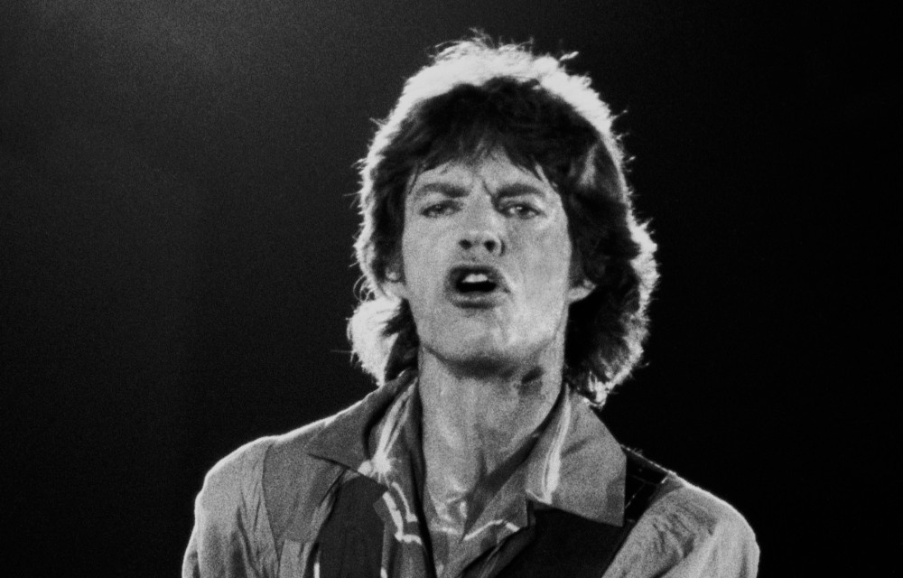
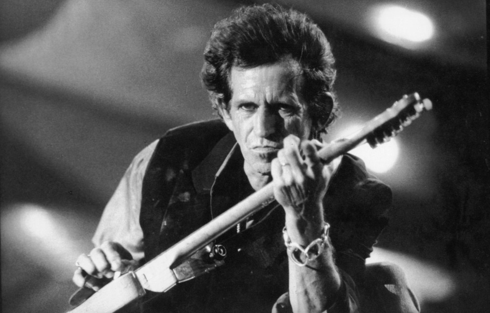
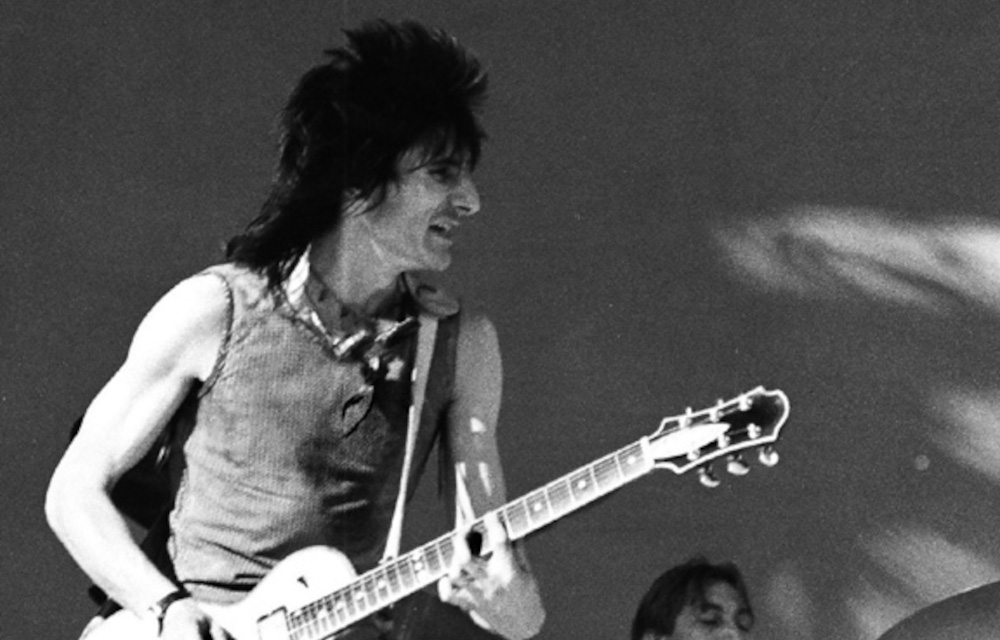

Current members

Mick Jagger
Lead vocals
Mick Jagger joined the band since its beginnings and has been performing as the main vocals for the group. Besides the main vocals he also performs background vocals, plays rhythm guitar, harmonica, percussion and keyboards.

Keith Richards
Lead guitars
Keith Richards has been the lead guitar since the beginnings of the band, and also plays rhythm guitar, bass guitar, and lead and background vocals.

Charlie Watts
Drums
Charlie Watts has been the drummer almost since the beginning (joined just one year after the band formation).

Ron Wood
Rhythm guitars
Ron Wood joined the band in mid 70s, and has also been playing lead guitars, bass guitar and backing vocals.